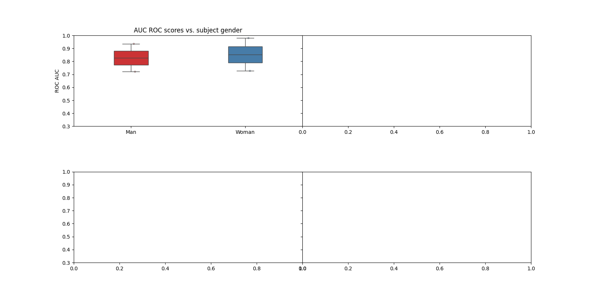
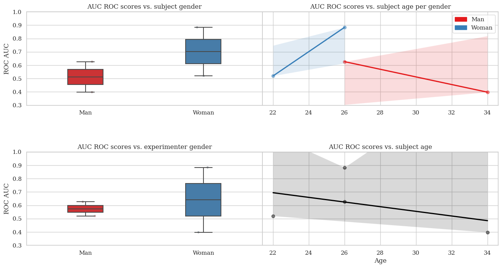
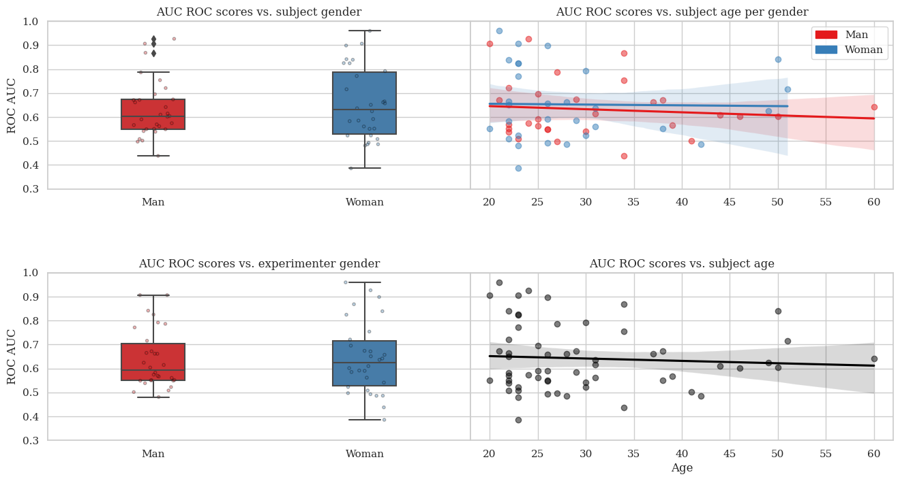

Note
Go to the end to download the full example code.
Examples of analysis of a Dreyer2023 A dataset.#
This example shows how to plot Dreyer2023A Left-Right Imagery ROC AUC scores obtained with CSP+LDA pipeline versus demographic information of the examined subjects (gender and age) and experimenters (gender).
To reduce computational time, the example is provided for four subjects.
# Authors: Sara Sedlar <sara.sedlar@gmail.com>
# Sylvain Chevallier <sylvain.chevallier@universite-paris-saclay.fr>
# License: BSD (3-clause)
import matplotlib.patches as mpatches
import matplotlib.pyplot as plt
import seaborn as sb
from pyriemann.estimation import Covariances
from pyriemann.spatialfilters import CSP
from sklearn.discriminant_analysis import LinearDiscriminantAnalysis as LDA
from sklearn.pipeline import make_pipeline
from moabb.datasets import Dreyer2023A
from moabb.evaluations import WithinSessionEvaluation
from moabb.paradigms import MotorImagery
Defining dataset, selecting subject for analysis and getting data
dreyer2023 = Dreyer2023A()
dreyer2023.subject_list = [1, 5, 7, 35]
dreyer2023.get_data()
0%| | 0.00/5.84k [00:00<?, ?B/s]
0%| | 0.00/5.84k [00:00<?, ?B/s]
100%|█████████████████████████████████████| 5.84k/5.84k [00:00<00:00, 38.5MB/s]
0it [00:00, ?it/s]
0%| | 0.00/698 [00:00<?, ?B/s]
0%| | 0.00/698 [00:00<?, ?B/s]
100%|█████████████████████████████████████████| 698/698 [00:00<00:00, 3.93MB/s]
1it [00:00, 1.01it/s]
0%| | 0.00/89.0k [00:00<?, ?B/s]
54%|████████████████████▌ | 48.1k/89.0k [00:00<00:00, 370kB/s]
0%| | 0.00/89.0k [00:00<?, ?B/s]
100%|██████████████████████████████████████| 89.0k/89.0k [00:00<00:00, 251MB/s]
2it [00:02, 1.36s/it]
0%| | 0.00/303 [00:00<?, ?B/s]
0%| | 0.00/303 [00:00<?, ?B/s]
100%|█████████████████████████████████████████| 303/303 [00:00<00:00, 1.80MB/s]
3it [00:04, 1.67s/it]
0%| | 0.00/485k [00:00<?, ?B/s]
10%|███▊ | 48.1k/485k [00:00<00:01, 366kB/s]
23%|█████████▍ | 114k/485k [00:00<00:00, 503kB/s]
57%|██████████████████████▉ | 278k/485k [00:00<00:00, 864kB/s]
0%| | 0.00/485k [00:00<?, ?B/s]
100%|███████████████████████████████████████| 485k/485k [00:00<00:00, 1.53GB/s]
4it [00:06, 1.92s/it]
0%| | 0.00/1.92k [00:00<?, ?B/s]
0%| | 0.00/1.92k [00:00<?, ?B/s]
100%|█████████████████████████████████████| 1.92k/1.92k [00:00<00:00, 11.0MB/s]
5it [00:08, 1.82s/it]
0%| | 0.00/788 [00:00<?, ?B/s]
0%| | 0.00/788 [00:00<?, ?B/s]
100%|█████████████████████████████████████████| 788/788 [00:00<00:00, 4.06MB/s]
6it [00:09, 1.63s/it]
0%| | 0.00/2.22k [00:00<?, ?B/s]
0%| | 0.00/2.22k [00:00<?, ?B/s]
100%|█████████████████████████████████████| 2.22k/2.22k [00:00<00:00, 10.9MB/s]
7it [00:11, 1.57s/it]
0%| | 0.00/1.39M [00:00<?, ?B/s]
3%|█▎ | 48.1k/1.39M [00:00<00:03, 383kB/s]
9%|███▋ | 130k/1.39M [00:00<00:02, 583kB/s]
21%|████████ | 298k/1.39M [00:00<00:01, 1.04MB/s]
55%|████████████████████▉ | 769k/1.39M [00:00<00:00, 2.40MB/s]
0%| | 0.00/1.39M [00:00<?, ?B/s]
100%|█████████████████████████████████████| 1.39M/1.39M [00:00<00:00, 4.42GB/s]
8it [00:13, 1.67s/it]
0%| | 0.00/72.6M [00:00<?, ?B/s]
0%| | 48.1k/72.6M [00:00<03:08, 384kB/s]
0%| | 114k/72.6M [00:00<02:19, 519kB/s]
0%|▏ | 262k/72.6M [00:00<01:17, 932kB/s]
1%|▎ | 671k/72.6M [00:00<00:34, 2.10MB/s]
2%|▉ | 1.80M/72.6M [00:00<00:13, 5.30MB/s]
7%|██▍ | 4.89M/72.6M [00:00<00:04, 13.8MB/s]
13%|████▉ | 9.64M/72.6M [00:00<00:02, 24.6MB/s]
17%|██████▍ | 12.6M/72.6M [00:00<00:02, 23.9MB/s]
21%|███████▋ | 15.0M/72.6M [00:00<00:02, 22.8MB/s]
24%|████████▊ | 17.3M/72.6M [00:01<00:02, 22.9MB/s]
29%|██████████▌ | 20.8M/72.6M [00:01<00:01, 25.9MB/s]
34%|████████████▌ | 24.6M/72.6M [00:01<00:01, 28.6MB/s]
39%|██████████████▍ | 28.4M/72.6M [00:01<00:01, 31.3MB/s]
46%|█████████████████ | 33.6M/72.6M [00:01<00:01, 35.5MB/s]
52%|███████████████████▎ | 37.7M/72.6M [00:01<00:00, 37.2MB/s]
58%|█████████████████████▍ | 42.1M/72.6M [00:01<00:00, 39.0MB/s]
65%|████████████████████████ | 47.2M/72.6M [00:01<00:00, 42.4MB/s]
71%|██████████████████████████▍ | 51.8M/72.6M [00:01<00:00, 43.4MB/s]
77%|████████████████████████████▋ | 56.2M/72.6M [00:02<00:00, 42.7MB/s]
83%|██████████████████████████████▊ | 60.5M/72.6M [00:02<00:00, 40.8MB/s]
89%|████████████████████████████████▉ | 64.6M/72.6M [00:02<00:00, 39.8MB/s]
96%|███████████████████████████████████▌ | 69.8M/72.6M [00:02<00:00, 43.2MB/s]
0%| | 0.00/72.6M [00:00<?, ?B/s]
100%|██████████████████████████████████████| 72.6M/72.6M [00:00<00:00, 226GB/s]
9it [00:16, 2.29s/it]
9it [00:16, 1.87s/it]
0it [00:00, ?it/s]
0%| | 0.00/65.0M [00:00<?, ?B/s]
0%| | 48.1k/65.0M [00:00<03:09, 343kB/s]
0%| | 114k/65.0M [00:00<02:15, 479kB/s]
0%|▏ | 245k/65.0M [00:00<01:20, 803kB/s]
1%|▍ | 654k/65.0M [00:00<00:32, 1.98MB/s]
3%|▉ | 1.69M/65.0M [00:00<00:13, 4.82MB/s]
7%|██▍ | 4.38M/65.0M [00:00<00:05, 12.1MB/s]
13%|████▊ | 8.43M/65.0M [00:00<00:02, 21.1MB/s]
16%|██████ | 10.6M/65.0M [00:00<00:02, 18.6MB/s]
23%|████████▎ | 14.7M/65.0M [00:01<00:02, 20.0MB/s]
26%|█████████▌ | 16.8M/65.0M [00:01<00:02, 17.7MB/s]
32%|███████████▉ | 21.0M/65.0M [00:01<00:01, 23.4MB/s]
37%|█████████████▊ | 24.2M/65.0M [00:01<00:01, 25.5MB/s]
42%|███████████████▌ | 27.3M/65.0M [00:01<00:01, 25.2MB/s]
48%|█████████████████▉ | 31.5M/65.0M [00:01<00:01, 29.1MB/s]
54%|████████████████████ | 35.2M/65.0M [00:01<00:00, 31.3MB/s]
60%|██████████████████████▎ | 39.3M/65.0M [00:01<00:00, 33.1MB/s]
66%|████████████████████████▎ | 42.6M/65.0M [00:02<00:00, 30.2MB/s]
73%|██████████████████████████▉ | 47.3M/65.0M [00:02<00:00, 32.1MB/s]
80%|█████████████████████████████▌ | 52.1M/65.0M [00:02<00:00, 36.2MB/s]
86%|███████████████████████████████▋ | 55.8M/65.0M [00:02<00:00, 34.9MB/s]
91%|█████████████████████████████████▊ | 59.3M/65.0M [00:02<00:00, 31.2MB/s]
97%|███████████████████████████████████▊ | 63.0M/65.0M [00:02<00:00, 32.5MB/s]
0%| | 0.00/65.0M [00:00<?, ?B/s]
100%|██████████████████████████████████████| 65.0M/65.0M [00:00<00:00, 184GB/s]
9it [00:04, 1.96it/s]
9it [00:04, 1.96it/s]
0it [00:00, ?it/s]
0%| | 0.00/64.3M [00:00<?, ?B/s]
0%| | 48.1k/64.3M [00:00<02:58, 360kB/s]
0%| | 114k/64.3M [00:00<02:08, 501kB/s]
0%|▏ | 261k/64.3M [00:00<01:10, 908kB/s]
1%|▍ | 671k/64.3M [00:00<00:30, 2.10MB/s]
3%|█ | 1.77M/64.3M [00:00<00:12, 5.14MB/s]
8%|██▉ | 5.01M/64.3M [00:00<00:04, 14.1MB/s]
14%|█████ | 8.83M/64.3M [00:00<00:02, 21.7MB/s]
20%|███████▏ | 12.6M/64.3M [00:00<00:02, 23.5MB/s]
23%|████████▌ | 14.9M/64.3M [00:01<00:02, 22.4MB/s]
27%|█████████▊ | 17.1M/64.3M [00:01<00:02, 17.8MB/s]
30%|██████████▉ | 19.0M/64.3M [00:01<00:02, 17.9MB/s]
38%|█████████████▉ | 24.2M/64.3M [00:01<00:01, 24.5MB/s]
46%|████████████████▊ | 29.3M/64.3M [00:01<00:01, 31.2MB/s]
51%|██████████████████▋ | 32.6M/64.3M [00:01<00:01, 31.0MB/s]
58%|█████████████████████▌ | 37.5M/64.3M [00:01<00:00, 33.4MB/s]
65%|████████████████████████ | 41.7M/64.3M [00:01<00:00, 35.7MB/s]
71%|██████████████████████████▏ | 45.6M/64.3M [00:01<00:00, 36.2MB/s]
78%|████████████████████████████▋ | 49.9M/64.3M [00:02<00:00, 38.2MB/s]
84%|██████████████████████████████▉ | 53.8M/64.3M [00:02<00:00, 37.6MB/s]
90%|█████████████████████████████████▏ | 57.6M/64.3M [00:02<00:00, 31.2MB/s]
96%|███████████████████████████████████▋ | 62.0M/64.3M [00:02<00:00, 32.6MB/s]
0%| | 0.00/64.3M [00:00<?, ?B/s]
100%|██████████████████████████████████████| 64.3M/64.3M [00:00<00:00, 208GB/s]
9it [00:03, 2.37it/s]
9it [00:03, 2.37it/s]
0it [00:00, ?it/s]
0%| | 0.00/67.2M [00:00<?, ?B/s]
0%| | 48.1k/67.2M [00:00<02:56, 380kB/s]
0%| | 130k/67.2M [00:00<01:55, 582kB/s]
0%|▏ | 310k/67.2M [00:00<01:01, 1.08MB/s]
1%|▍ | 785k/67.2M [00:00<00:27, 2.44MB/s]
3%|█▏ | 2.08M/67.2M [00:00<00:10, 6.07MB/s]
7%|██▋ | 4.80M/67.2M [00:00<00:04, 12.7MB/s]
11%|████▏ | 7.67M/67.2M [00:00<00:03, 17.8MB/s]
14%|█████▏ | 9.46M/67.2M [00:00<00:04, 13.2MB/s]
19%|███████▏ | 13.0M/67.2M [00:01<00:02, 18.7MB/s]
23%|████████▎ | 15.1M/67.2M [00:01<00:02, 18.4MB/s]
26%|█████████▍ | 17.2M/67.2M [00:01<00:02, 17.6MB/s]
31%|███████████▋ | 21.1M/67.2M [00:01<00:02, 21.8MB/s]
36%|█████████████▏ | 23.9M/67.2M [00:01<00:01, 23.3MB/s]
41%|███████████████▏ | 27.5M/67.2M [00:01<00:01, 26.3MB/s]
46%|█████████████████ | 30.9M/67.2M [00:01<00:01, 28.4MB/s]
50%|██████████████████▌ | 33.8M/67.2M [00:01<00:01, 27.9MB/s]
56%|████████████████████▌ | 37.4M/67.2M [00:01<00:00, 30.0MB/s]
60%|██████████████████████▎ | 40.5M/67.2M [00:02<00:00, 29.5MB/s]
65%|████████████████████████▏ | 44.0M/67.2M [00:02<00:00, 29.4MB/s]
70%|█████████████████████████▊ | 47.0M/67.2M [00:02<00:00, 23.4MB/s]
75%|███████████████████████████▉ | 50.7M/67.2M [00:02<00:00, 26.7MB/s]
80%|█████████████████████████████▌ | 53.6M/67.2M [00:02<00:00, 27.1MB/s]
85%|███████████████████████████████▎ | 56.9M/67.2M [00:02<00:00, 28.7MB/s]
89%|█████████████████████████████████ | 60.1M/67.2M [00:02<00:00, 28.4MB/s]
95%|███████████████████████████████████▏ | 63.8M/67.2M [00:02<00:00, 29.7MB/s]
99%|████████████████████████████████████▊| 66.9M/67.2M [00:03<00:00, 29.1MB/s]
0%| | 0.00/67.2M [00:00<?, ?B/s]
100%|██████████████████████████████████████| 67.2M/67.2M [00:00<00:00, 291GB/s]
9it [00:04, 2.19it/s]
9it [00:04, 2.19it/s]
{1: {'0': {'0R1acquisition': <RawEDF | sub-01_task-R1acquisition_eeg.edf, 32 x 230400 (450.0 s), ~56.3 MiB, data loaded>, '1R2acquisition': <RawEDF | sub-01_task-R2acquisition_eeg.edf, 32 x 230400 (450.0 s), ~56.3 MiB, data loaded>, '2R3online': <RawEDF | sub-01_task-R3online_eeg.edf, 32 x 230912 (451.0 s), ~56.4 MiB, data loaded>, '3R4online': <RawEDF | sub-01_task-R4online_eeg.edf, 32 x 230912 (451.0 s), ~56.4 MiB, data loaded>, '4R5online': <RawEDF | sub-01_task-R5online_eeg.edf, 32 x 230912 (451.0 s), ~56.4 MiB, data loaded>, '5R6online': <RawEDF | sub-01_task-R6online_eeg.edf, 32 x 230912 (451.0 s), ~56.4 MiB, data loaded>}}, 5: {'0': {'0R1acquisition': <RawEDF | sub-05_task-R1acquisition_eeg.edf, 32 x 230912 (451.0 s), ~56.4 MiB, data loaded>, '1R2acquisition': <RawEDF | sub-05_task-R2acquisition_eeg.edf, 32 x 230912 (451.0 s), ~56.4 MiB, data loaded>, '2R3online': <RawEDF | sub-05_task-R3online_eeg.edf, 32 x 230912 (451.0 s), ~56.4 MiB, data loaded>, '3R4online': <RawEDF | sub-05_task-R4online_eeg.edf, 32 x 230912 (451.0 s), ~56.4 MiB, data loaded>, '4R5online': <RawEDF | sub-05_task-R5online_eeg.edf, 32 x 230912 (451.0 s), ~56.4 MiB, data loaded>, '5R6online': <RawEDF | sub-05_task-R6online_eeg.edf, 32 x 234496 (458.0 s), ~57.3 MiB, data loaded>}}, 7: {'0': {'0R1acquisition': <RawEDF | sub-07_task-R1acquisition_eeg.edf, 32 x 230912 (451.0 s), ~56.4 MiB, data loaded>, '1R2acquisition': <RawEDF | sub-07_task-R2acquisition_eeg.edf, 32 x 230912 (451.0 s), ~56.4 MiB, data loaded>, '2R3online': <RawEDF | sub-07_task-R3online_eeg.edf, 32 x 230912 (451.0 s), ~56.4 MiB, data loaded>, '3R4online': <RawEDF | sub-07_task-R4online_eeg.edf, 32 x 230912 (451.0 s), ~56.4 MiB, data loaded>, '4R5online': <RawEDF | sub-07_task-R5online_eeg.edf, 32 x 230912 (451.0 s), ~56.4 MiB, data loaded>, '5R6online': <RawEDF | sub-07_task-R6online_eeg.edf, 32 x 230400 (450.0 s), ~56.3 MiB, data loaded>}}, 35: {'0': {'0R1acquisition': <RawEDF | sub-35_task-R1acquisition_eeg.edf, 32 x 230912 (451.0 s), ~56.4 MiB, data loaded>, '1R2acquisition': <RawEDF | sub-35_task-R2acquisition_eeg.edf, 32 x 230912 (451.0 s), ~56.4 MiB, data loaded>, '2R3online': <RawEDF | sub-35_task-R3online_eeg.edf, 32 x 230912 (451.0 s), ~56.4 MiB, data loaded>, '3R4online': <RawEDF | sub-35_task-R4online_eeg.edf, 32 x 230912 (451.0 s), ~56.4 MiB, data loaded>, '4R5online': <RawEDF | sub-35_task-R5online_eeg.edf, 32 x 230912 (451.0 s), ~56.4 MiB, data loaded>, '5R6online': <RawEDF | sub-35_task-R6online_eeg.edf, 32 x 230912 (451.0 s), ~56.4 MiB, data loaded>}}}
Defining MotorImagery paradigm and CSP+LDA pipeline
paradigm = MotorImagery()
pipelines = {}
pipelines["CSP+LDA"] = make_pipeline(
Covariances(estimator="oas"), CSP(nfilter=6), LDA(solver="lsqr", shrinkage="auto")
)
Within session evaluation of the pipeline
evaluation = WithinSessionEvaluation(
paradigm=paradigm, datasets=[dreyer2023], suffix="examples", overwrite=False
)
results = evaluation.process(pipelines)
Dreyer2023A-WithinSession: 0%| | 0/4 [00:00<?, ?it/s]
0it [00:00, ?it/s]
9it [00:00, 9868.95it/s]
Dreyer2023A-WithinSession: 25%|██▌ | 1/4 [00:08<00:25, 8.60s/it]
0it [00:00, ?it/s]
9it [00:00, 12328.13it/s]
Dreyer2023A-WithinSession: 50%|█████ | 2/4 [00:17<00:17, 8.51s/it]
0it [00:00, ?it/s]
9it [00:00, 12137.86it/s]
Dreyer2023A-WithinSession: 75%|███████▌ | 3/4 [00:25<00:08, 8.43s/it]
0it [00:00, ?it/s]
9it [00:00, 12633.45it/s]
Dreyer2023A-WithinSession: 100%|██████████| 4/4 [00:33<00:00, 8.39s/it]
Dreyer2023A-WithinSession: 100%|██████████| 4/4 [00:33<00:00, 8.43s/it]
Loading dataset info and concatenation with the obtained results
info = dreyer2023.get_subject_info().rename(columns={"score": "score_MR"})
# Creating a new column with subject's age
info["Age"] = 2019 - info["Birth_year"]
# Casting to int for merging
info["subject"] = info["SUJ_ID"].astype(int)
results["subject"] = results["subject"].astype(int)
results_info = results.merge(info, on="subject", how="left")
0%| | 0.00/19.8k [00:00<?, ?B/s]
0%| | 0.00/19.8k [00:00<?, ?B/s]
100%|█████████████████████████████████████| 19.8k/19.8k [00:00<00:00, 99.0MB/s]
5.1 Plotting subject AUC ROC scores vs subject’s gender
fig, ax = plt.subplots(nrows=2, ncols=2, facecolor="white", figsize=[16, 8], sharey=True)
fig.subplots_adjust(wspace=0.0, hspace=0.5)
sb.boxplot(
data=results_info, y="score", x="SUJ_gender", ax=ax[0, 0], palette="Set1", width=0.3
)
sb.stripplot(
data=results_info,
y="score",
x="SUJ_gender",
ax=ax[0, 0],
palette="Set1",
linewidth=1,
edgecolor="k",
size=3,
alpha=0.3,
zorder=1,
)
ax[0, 0].set_title("AUC ROC scores vs. subject gender")
ax[0, 0].set_xticklabels(["Man", "Woman"])
ax[0, 0].set_ylabel("ROC AUC")
ax[0, 0].set_xlabel(None)
ax[0, 0].set_ylim(0.3, 1)

(0.3, 1.0)
5.2 Plotting subject AUC ROC scores vs subjects’s age per gender
sb.regplot(
data=results_info[results_info["SUJ_gender"] == 1][["score", "Age"]].astype(
"float32"
),
y="score",
x="Age",
ax=ax[0, 1],
scatter_kws={"color": "#e41a1c", "alpha": 0.5},
line_kws={"color": "#e41a1c"},
)
sb.regplot(
data=results_info[results_info["SUJ_gender"] == 2][["score", "Age"]].astype(
"float32"
),
y="score",
x="Age",
ax=ax[0, 1],
scatter_kws={"color": "#377eb8", "alpha": 0.5},
line_kws={"color": "#377eb8"},
)
ax[0, 1].set_title("AUC ROC scores vs. subject age per gender")
ax[0, 1].set_ylabel(None)
ax[0, 1].set_xlabel(None)
ax[0, 1].legend(
handles=[
mpatches.Patch(color="#e41a1c", label="Man"),
mpatches.Patch(color="#377eb8", label="Woman"),
]
)
<matplotlib.legend.Legend object at 0x7f30b3f2ce50>
5.3 Plotting subject AUC ROC scores vs experimenter’s gender
sb.boxplot(
data=results_info, y="score", x="EXP_gender", ax=ax[1, 0], palette="Set1", width=0.3
)
sb.stripplot(
data=results_info,
y="score",
x="EXP_gender",
ax=ax[1, 0],
palette="Set1",
linewidth=1,
edgecolor="k",
size=3,
alpha=0.3,
zorder=1,
)
ax[1, 0].set_title("AUC ROC scores vs. experimenter gender")
ax[1, 0].set_xticklabels(["Man", "Woman"])
ax[1, 0].set_ylabel("ROC AUC")
ax[1, 0].set_xlabel(None)
ax[1, 0].set_ylim(0.3, 1)
(0.3, 1.0)
5.4 Plotting subject AUC ROC scores vs subject’s age
5.5 Obtained results for four selected subjects correspond to the following figure.#

Obtained results for all subjects correspond to the following figure.

Total running time of the script: (1 minutes 13.375 seconds)
Estimated memory usage: 2139 MB
Run this example